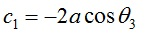

Learning objectives
After completing simulation experiments on slider crank mechanism one should be able to- Determine the location of the piston of a reciprocating engine or compressor at any given crank angle, for a given crank and connecting rod length
- Determine the swing angle of connecting rod of a slider crank mechanism
- Determine the minimum bore diameter required for a given l/r ratio
- Explain the effect of l/r ratio
Introduction
The slider-crank mechanism is one of the most useful mechanisms in modern technology since it
appears in most of the internal combustion engines including automobiles, trucks and small engines.
The slider-crank kinematic chain consists of four bodies linked with three cylindrical joints and one
sliding or prismatic joint. It is used to change circular into reciprocating motion, or reciprocating into
circular motion.

Figure 1: Slider Crank
Position Analysis

Figure 2: Slider Crank system with offset
Above figure shows a slider-crank mechanism in which the stroke-line of the slider doesn't pass through the axis of rotation of the crank.
Finding the equations for this case and substituting c=0 (that is setting link length of R4 to 0) will give us the equations for slider crank mechanism without offset. The equations for the general condition as given below.

and

Where  and 

- The simulation is of a slider crank mechanism without any offset i.e. the axis of sliding element passes through the crank center.
- Change the parameters under variables section and observe the motion of the slider crank mechanism.


- What is the displacement v/s time curve of the motion of slider in slider crank mechanism?


-
Robert L Norton (2011), Design of Machinery (5th Ed.), McGraw Hill Publication
Uicker J.J., Pennock G.R. and Shigley J.E. (2009), Theory of Machines and Mechanisms (3rd Ed.), Oxford University Press
S S Rattan (2014), Theory of Machines (4th Ed.), McGraw Hill Education (India) Private Limited